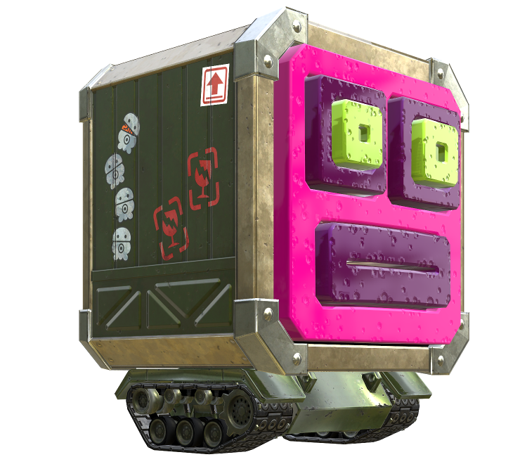

Presentadora

Perla
Perla
El nombre japonés de Perla, Hime, significa "princesa", lo cual explica por qué lleva una corona. Es junto a Marina la componente del grupo Cefalopop y las anfitrionas del noticiero de la plaza.
Presentadora

Marina
Marina
El nombre japonés de Marina, Ida, hace referencia a un pulpo oscuro llamado Webfoot octopus. Es junto a Perla la componente del grupo Cefalopop y las anfitrionas del noticiero de la plaza.
Juez

Justino y Justito
Justino y Justito
Ejercen el papel de árbtiros en los combates multijugador en línea. En el Splatoon 1 solo aparecía Justino. A Justito lo conocimos en la segunda entrega.
Guía Octoexpansión

Capitán Jibión
Capitán Jibión
Es un condecorado héroe que luchó en las Grandes Guerras de Territorios entre los inklings y los octarianos. Él actúa como un guía para el protagonista en el Modo héroe.
Vendedor

Jairo
Jairo
Es el tendero de la tienda Armería Todotinta.
Vendedor

Paticio
Paticio
Es un cangrejo araña, tendero que dirige la tienda de Ochosuelas en Inkopolis Square.
Vendedor

M. Eduardo
M. Eduardo
Medusa que dirige la tienda Prêt-à-Poulpe.
Vendedores

Iris y K. Marón
Iris y K. Marón
Iris una babosa de mar que dirige la tienda Palasesera. K. Maron es un camarón que es su ayudante en la tienda.
Enemigo
Octariano
Octariano
Los Octarianos son una raza de criaturas con forma de pulpo y los principales antagonistas del juego. tienen un gran número de sub-especies que actúan de forma distinta.
Enemiga
Octoamazonas
Octoamazonas
Son guerreras con la habilidad de adoptar forma humana. Constituyen el cuerpo de élite de las fuerzas Octarianas capaces de usar armas y bombas de tinta al igual que la raza inkling en el juego.
Enemigo
Octotirador
Octotirador
Es un tipo de Octariano que disparan tinta a larga distancia con armas rápidas. Ellos se sitúan en una plataforma inmóvil, donde dispararán grandes y veloces líneas de tinta. Son los enemigos terrestres más grandes.
Enemigo
Octariano sanitizado
Octariano sanitizado
Son una variación de Octariano, son solo de otro color, ya que han sido esterilizados y sanitizados. Este proceso los hace perder su personalidad y mente haciéndolos fáciles de controlar.
Enemigo
Octostamp
Octostamp
Los estampones poseen una apariencia cubica y metálica con el rostro de color morado y una textura aparentemente esponjada, con ciertos agujeros en ella. Provienen del Distrito Pulpo.
Enemigo
Octopatrullero
Octopatrullero
Es un helicóptero para reconocimiento y ataque. Está pilotado por un Octorrecluta, que utiliza un joystick para mover la nave y un botón para subirla y bajarla. Contiene una ventana para que Octorrecluta pueda ver.
Enemigo
Octobola
Octobola
Su característica figura redonda le permite rodar por el suelo pintándolo de tinta Octariana, tratando de arrollar al jugador. Cuando ruedan en su propia tinta son veloces, pero si ruedan en la tinta del jugador se paralizan.
Enemigo
Salmónido
Salmónido
Son una raza con forma de salmón y los principales antagonistas del Modo Salmon Run. La tinta que utilizan es siempre verde. Intentarán quitarte los alevines dorados y te perseguirán hasta eliminarte.